1. Overview
- My Role: UX/UI Designer (from user research to final UI design)
- Timeline: May 2018 - July 2018 (2 months in total)
- Tools: Figma, Marvel, Balsamiq
FitJet is a responsive web application which helps users find suitable exercises and stay fit. This is a project which was conducted as a part of UI for UX Designers course at CareerFoundry. Herein, I covered the whole UX and UI design process - from user research to final UI design.
2. User Research
In UI for UX designers course, user research result, including one persona, and main features of the application are provided by CareerFoundry beforehand. However, to listen to real users who exercise or use fitness applications, I did extra user research before moving onto user flow creation and wireframing. Especially, as a person who has tried to lose weight and be fitted using applications and video tutorials, not going to gym, before, I wanted to make the product as useful as possible - by gathering more opinions and insights. Thus, I interviewed 3 people and conducted user survey which was answered by 23 respondents.
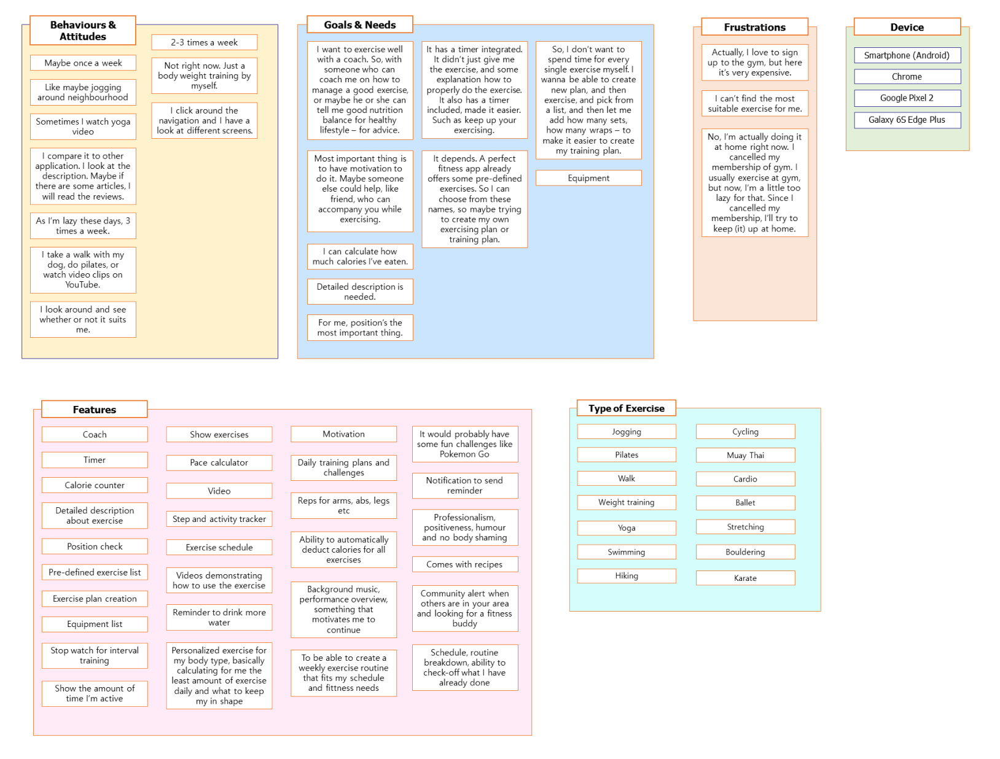Through the research process, I could gather the following insights:
- Users want to know how long they have worked out.
- Users want to check the how many calories they have eaten and need to consume.
- Users want a description of each exercise by coaching or video tutorials.
- Users want to be provided with exercising plans, routines or daily challenges within the application so that they do not need to make the plans by themselves from scratch.
3. User Personas
Based on the insights gathered by user research, I created 2 more personas with the one(herein Rebecca) provided by CareerFoundry. I could check and anticipate how the users will think and behave whilst exercising, and what they will want from the application I will make.
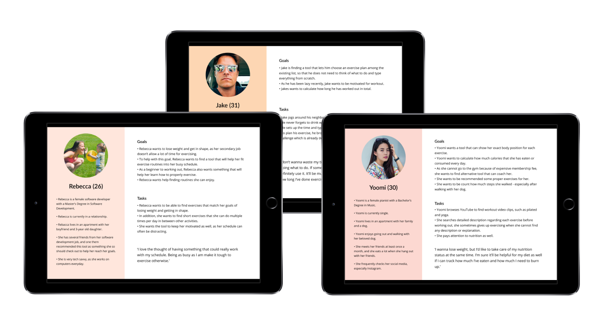4. User Journey Maps
Also, to check the detailed behaviours and thinking of each persona, I created user journey maps. I could look back on the personas' goals once again in this process, and find out opportunities which can be added to the application.
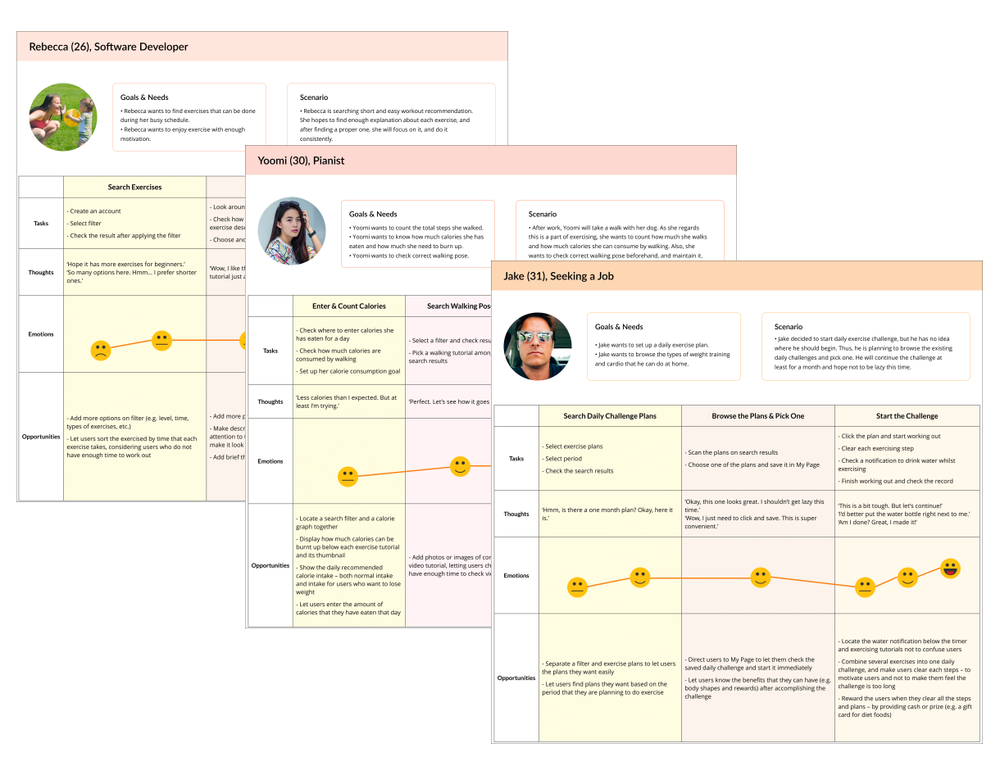Exercise scheduler (based on exercise interests and actual daily routine: commute, sit at desk, etc.)After creating all the materials, I fixed the features of applications - which will be added to the existing features provided by CareerFoundry. Firstly, the provided features are as follows:
- Search and filter exercise videos (based on type, difficulty level, length, etc.)
- Exercise scheduler (based on exercise interests and actual daily routine: commute, sit at desk, etc.)
- Option to add sessions to the calendar
- Create user accounts
- Tracking and charting of users’ progression over time
- A game layer with individual daily challenges, achievements, and/or rewards
- Social sharing for routines or favourite exercises
Here, I added the following features based on the whole user research results and related materials that I created:
- Choice of exercise based on categories
- Calorie intake and consumption record
- Height and weight record
- Timer and stopwatch
- Detailed workout tutorials both by video clips and photos
- Providing daily challenge lists for users' convenience
- Letting users set up how many calories they would like to consume and how many calories they need to spend per a day to achieve their goals
- Notification to drink water
5. User Flows
After setting up the features, I made user flows of each persona to see the steps that the users will need to take to achieve their goals. The flow creation process was also helpful to think of ways to categorise and place each feature.
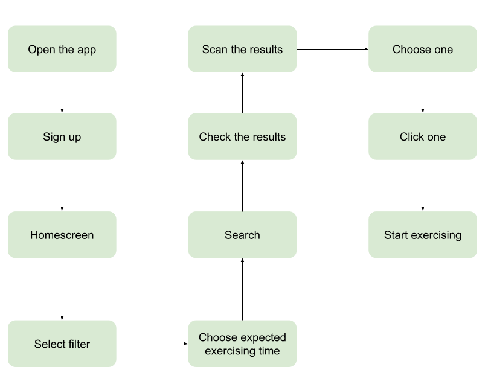6. Mid-Fidelity Wireframes & Layout
Based on the user flows and fixed features, I started to make wireframes. Firstly, I used Balsamiq to decide where to locate each feature and each asset.
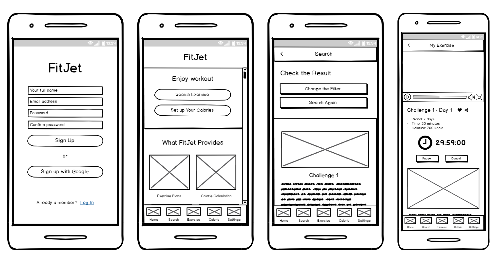Taking time to create mid-fidelity wireframes (mostly using Balsamiq) is strongly important part for me in UI/UX design processes, as I can have time to anticipate the form of overall layout by displaying each feature. In this stage, I could check the way that the application has been organised. Also, I could think of ways to minimise the steps that users will need to take whilst using the application.
In addition, I set up the layout of FitJet using grids - to make the UI and its display clearer to be seen.
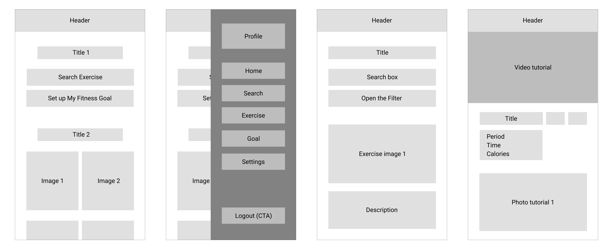7. High-Fidelity Wireframes
Based on the mid-fidelity wireframes and layout, I started to create grayscale wireframes at first before focusing on detailed styling. In this stage, I focused on providing proper interactions whilst users are using the application. Copies of some calls to action were also revised, to let users can easily and quickly find out what to do with the buttons.
I also made my effort in recommending proper types of exercises based on the circumstances of each user - including their height, weight, target calories and in which situation (e.g. location) they would like to work out.
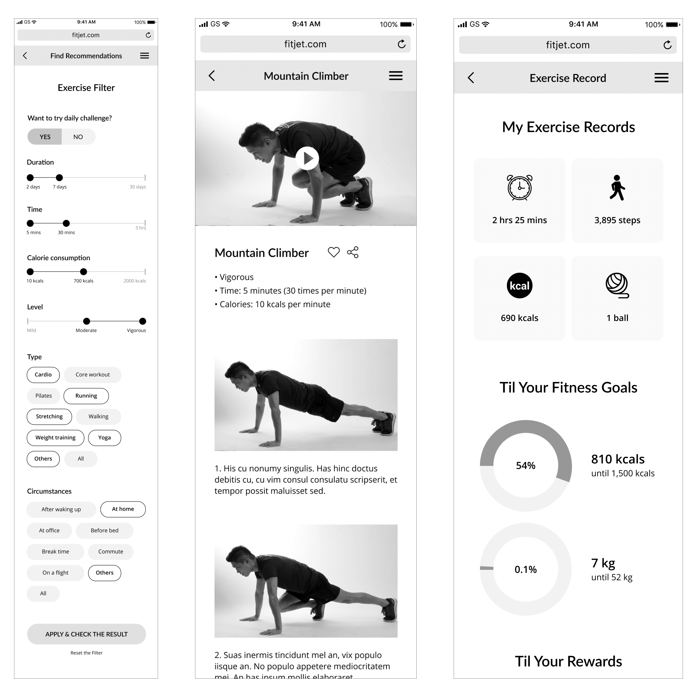After creating the wireframes for each feature, which include more detailed elements, I made a mood board for visual design guideline and proper branding of FitJet. I chose vivid orange colour as a main colour of FitJet to show activeness and happiness of exercising, not giving users too much pressure about getting fitted.
The grayscale wireframes were polished based on the colours and atmosphere of the mood board. Whilst polishing the wireframes, I changed some parts of interfaces into a way that shorten the steps that users will need to take.
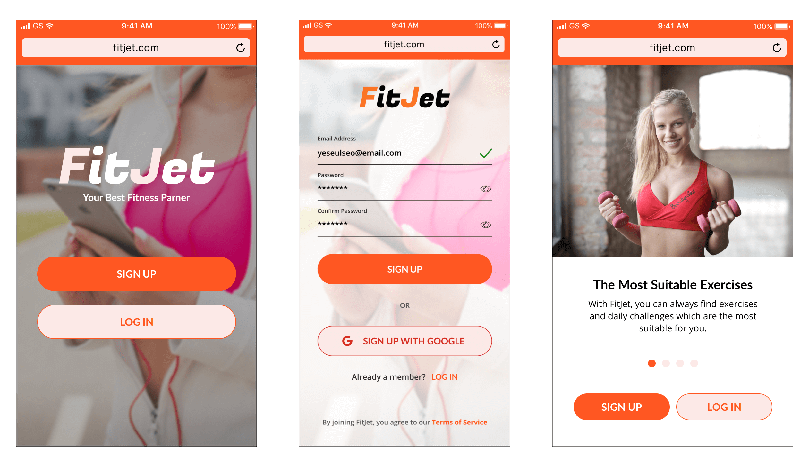 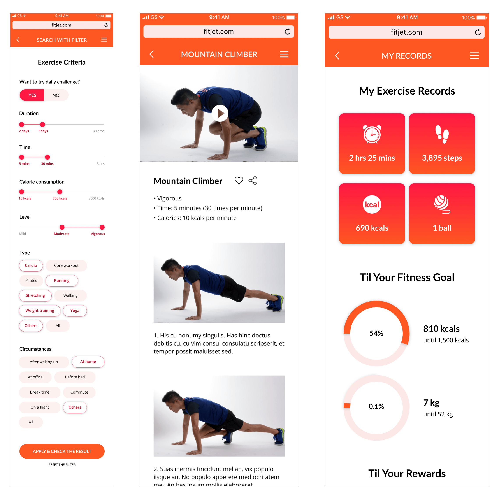8. Usability Testing & Iteration
As a UX Designer, I always believe listening to users' opinions and finding out usability problems before launching a digital product is an essential part - even if the problems may be small and trivial ones.
Hence, to check potential usability issues that the initial prototype of FitJet may have, I conducted usability testing sessions with 6 participants. Each session was held as a one-to-one interview. All the actions and comments during the tests were recorded and analysed. Based on the analysis result, 5 usability issues were prioritised, and I revised the wireframes and the prototype as follows:
Issue #1: Confusion about what the 'Find Recommendation' button is for
There was an opinion that the purpose of 'Find Recommmendation' button is unclear. Here, as I believe all the UX deliverables must be designed clear enough to understand, I concluded that call-to-action buttons cannot be an exception. Hence, I revised the copy of the button into 'Search with Filter' to let users easily catch what will be done by clicking the button.
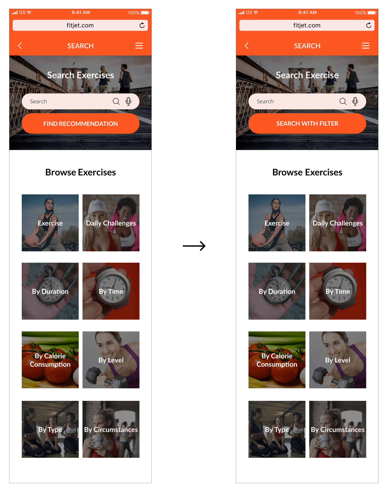Issue #2: Difficulty in finding 'Exercise Schedule,' trying to find it on 'Search' or 'My Exercise.'
In the initial prototype, Exercise Schedule was located in 'Settings,' but 4 participants felt difficulty to go directly to Settings and find the feature. Regardless of the usability of features, if the features are located in the place which is difficult to find, users need to browse all the application, wasting their time and even feeling frustrated.
As the 4 participants tried to find Exercise Schedule on 'Search' or 'My Exercise,' I considered displaying the feature within one of the menus, at first. However, I concluded I would better focus on features of searching and providing exercise list features for the 2 menus, and made a new menu, 'My Schedule' in the navigation drawer.
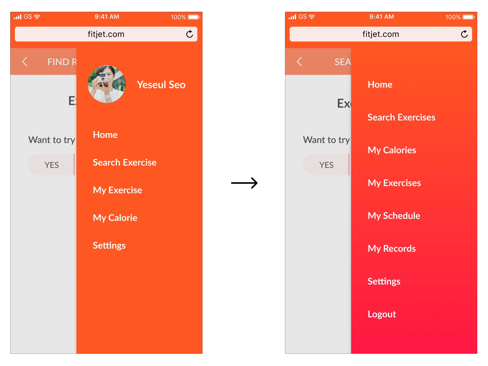Issue #3: Confusion about whether there is a connection between targeting calories and recommended exercises
During the usability testing sessions, I got the same question from 2 participants - whether or not there is a connection between the calories that the users have calculated in 'My Calorie' and the list of exercises that are recommended after calculating calories.
Here, to let users realise that they can try the recommended exercises to spend their targeting calories, I changed the copy 'Exercises for You' to 'To Consume 00 kcals' - to make it look more intuitive.
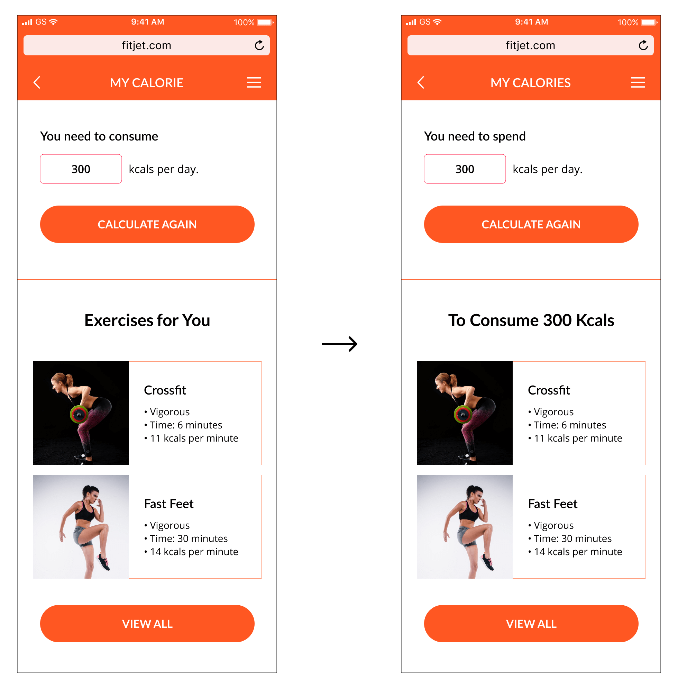Issue #4: Difficult to find the difference between ‘Daily Challenge’ and ‘Exercise’
Originally, I titled a one-day exercise plan 'Exercise' and a plan which is longer than a day 'Daily Challenge.' However, 2 participants felt difficult to realise the difference between those. Thus, I decided to add coach marks to let users understand what the difference is, and choose between those, based on their preference or other circumstances.
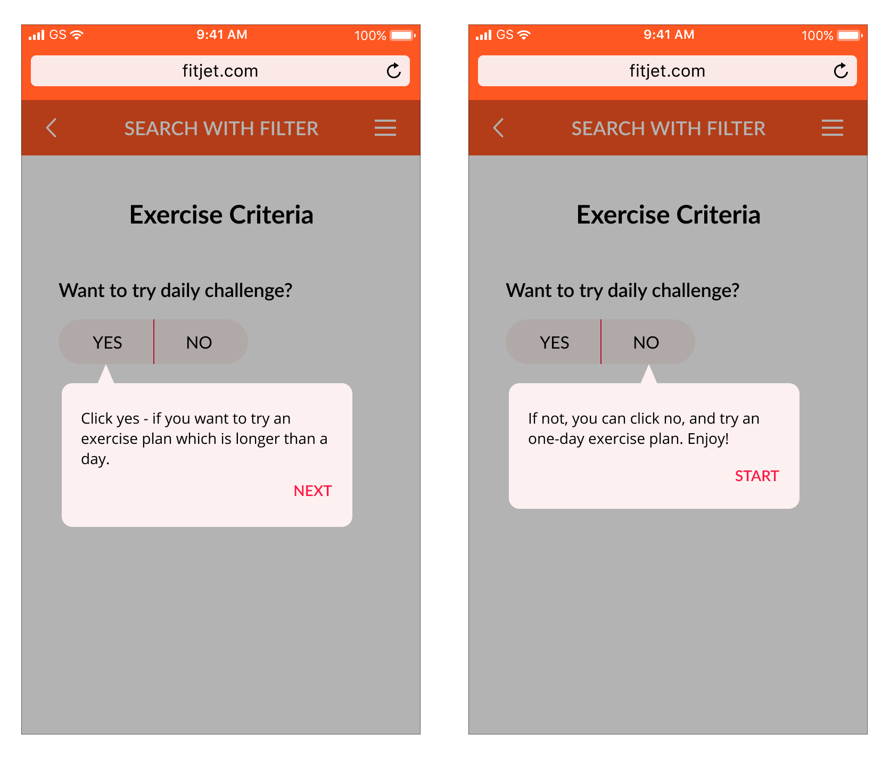Issue #5: Unnatural copy of a call-to-action button
Within 'My Calorie' menu, there was a comment by 2 participants that the copy of 'How Many I've Eaten' button does not look natural and they do not have an idea what the button is for. As I made the button for the users who do not know how many calories they have eaten exactly, I changed the copy to 'You Don't Know?' to let users click the button immediately when they need help for calculating calories.
In addition, I revised some other copies into the more natural way, such as 'My Calorie' to 'My Calories,' considering small copies may occur another usability issue.
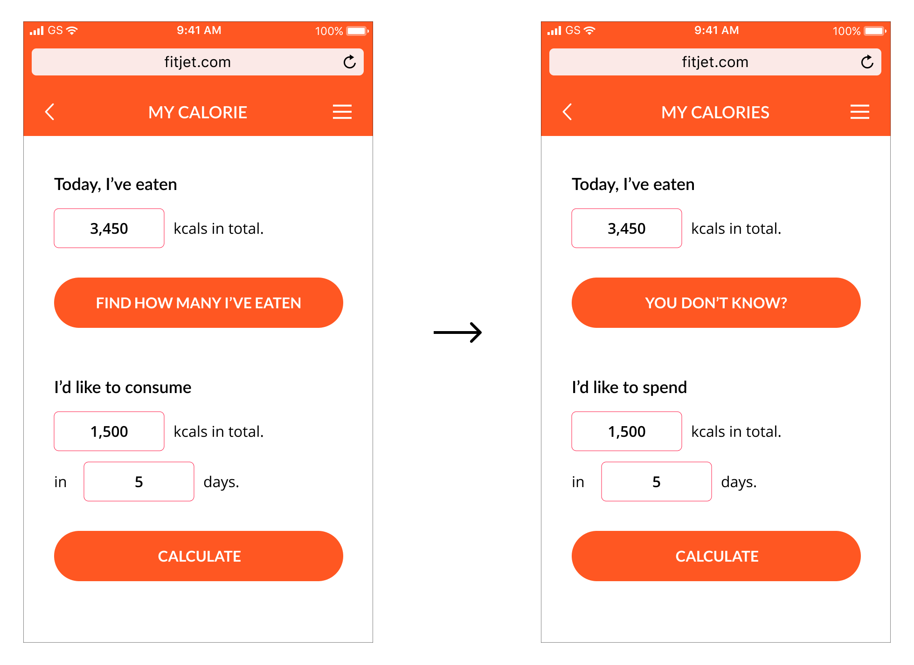9. Responsive Design
FitJet was planned to be made as a responsive web application. Hence, I created the wireframes for multi devices - mobile, tablet PC and desktop version. This was an invaluable challenge to accept, as I could consider accessibility for users, letting them be connected to FitJet whenever and wherever they want.
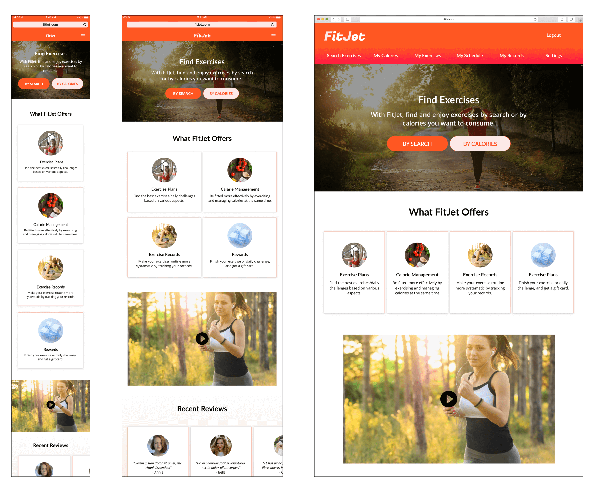 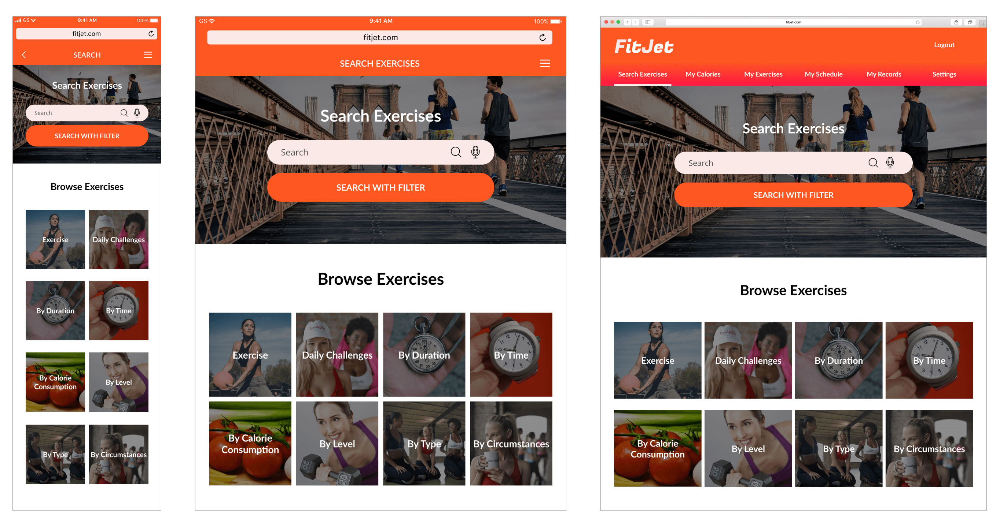10. Final Prototype & Lesson from the Project
Upgrading my UX design skills, it was an invaluable experience to look back at users' needs once again. In this project, I tried to apply more keywords which were gathered from user research. Most importantly, I could realise even if the small elements, such as copies within the application, can also influence the usability and overall user experiences of a digital product.
Meanwhile, as FitJet was a web application, not a native application like VELA, I could feel the difference between web and native applications whilst designing FitJet. Also, it was an invaluable opportunity to understand the strength and limitation of web applications during the design and testing process.
Based on the experience, I would like to meet and listen to more users, gather more insights regarding what they really want. I would also like to participate in a wide range of UX/UI design process and deliver outstanding products and services using my UX and UI skill set.